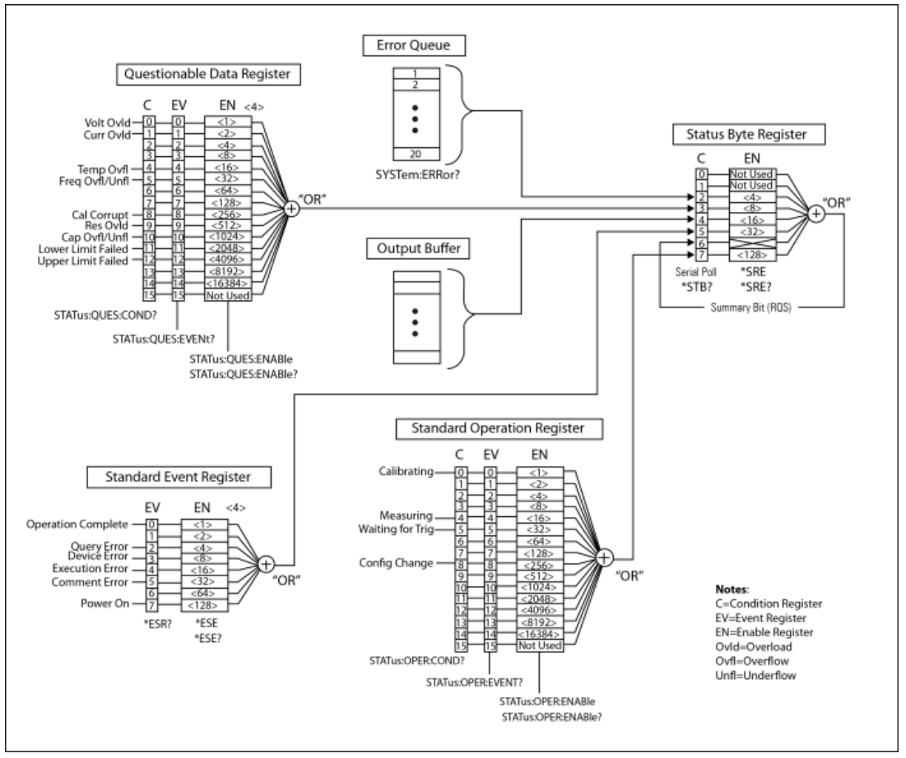

Status System Overview¶
The topics in this section provide an overview of the instrument SCPI status register structure accessed by the methods and properties found in the Kt34400Status interface and its child interfaces.
How to setup and use Service Requests
Kt34400 Status System Diagram¶
Each status register group shown corresponds to a Kt34400 driver status interface. Status register ‘Flags’ enumerations have members with binary weighted integer values corresponding to the bit values shown and may be used for bitwise operations.

Service Requests¶
This section describes how to configure the instrument status system to request service when a supported condition occurs and how to detect the Service Request (SRQ) using 2 techniques:
Polling the Instrument - Program polls the status byte in a wait loop until SRQ detected.
SRQ Event Callbacks - Driver asynchronously calls a user specified SRQ event handler method.
To configure the status system:
Set the appropriate status register EnableRegister bits to set the corresponding Status Byte summary bits when the desired condition or conditions occur.
Set the appropriate Status.ServiceRequestEnable register bits to enable the desired StatusByte bits to issue an SRQ.
To detect the SRQ:
Poll the status byte Or
Configure and enable SRQ event callbacks. Event callback functions are registered with the driver with the driver using the KtEvent class.
See the Status Service Request programming example which demonstrates configuring the status system and both SRQ detection techniques. It can be copied and run in simulation mode without an instrument.